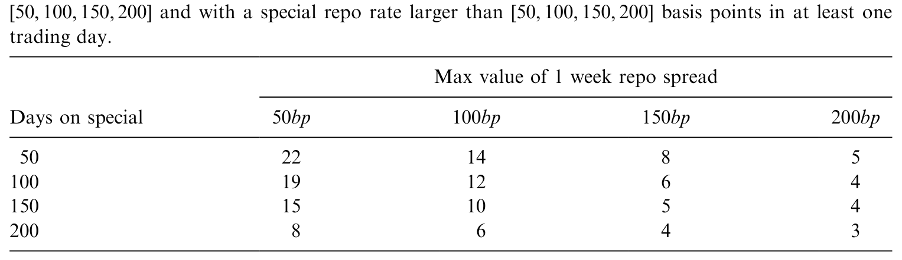
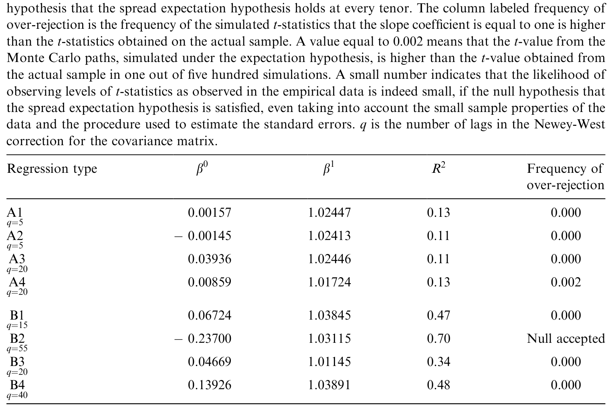
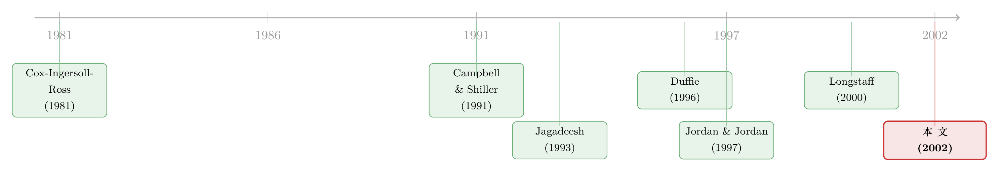

利差明明该收敛，价格却「多收」了一笔：从德国回购市场读懂 specialness
本文读的是 Buraschi & Menini (2002, Journal of Financial Economics)：他们用德国国债回购市场上 12 只「特殊券」的逐日数据，检验一个朴素的问题——今天的远期回购利差，到底能不能无偏地预测一只国债未来的稀缺价值（specialness）？答案是不能。远期利差系统性地高估了未来的 specialness，而这道「多出来的」缺口，正是市场为流动性风险索取的、随时间变动的风险溢价。
1 一个被忽略的市场，和一个朴素的问题
先讲一个几乎所有人都听过、却很少有人细想的场景。
你想做空一只国债。可你手里并没有这只债——做空的第一步，是先把它借进来。借券的去处，就是回购市场（repo market）：你做一笔「逆回购」，用现金作抵押，把对手手里的债券借过来，到期再换回去；中间这笔抵押借贷的利率，就叫回购利率（repo rate）。这是全世界最大、却最少被实证文献光顾的市场之一。论文里给的几个数字足以说明它的体量：1998 年德国国内回购市场的日均交易量大约是 US$250 billion，活跃做市的有约 35 家机构；而在全球范围内，回购据估计要占到非美国政府债日均结算量的一半（up to 50%）。橙县（Orange County）那场著名的破产，$7.5 billion 的资产撑起了 $20 billion 的头寸，几乎全靠回购加的杠杆。
这么大的市场，价格却藏着一个微妙的裂缝。大多数时候，市面上的债券被认为有着相同的抵押价值，于是它们以同一个利率融资——这个利率叫一般抵押利率（general collateral rate）。但总有那么一些券，融资利率更低：谁手里有这种券，谁就能用更便宜的成本给自己的库存融资。这些券被称为「on special（走俏 / 特殊）」，而它对应的、偏低的回购利率就是特殊回购利率（special repo rate）。一般抵押利率减去特殊回购利率，得到的差额就是本文的主角——回购利差（repo spread）。
回购利差本质上是一种便利收益（convenience yield）：持有一只 special 券，相当于额外获得了「能以更低成本融资 / 把券借出去收租」的好处。它和「国债被当成准货币」那种便利收益是同一类东西（关于后者，可参见《无风险国债是「制造」出来的》与《绿色溢价真的归零了吗？》里对德国孪生国债便利收益的拆解）。
到这里，故事还只是制度描述。接着，一个自然的问题浮出水面：既然有些券会在未来一段时间里持续地走俏、持续地以更低利率滚动融资，那理性的市场应该提前替这份「未来的好处」定价——也就是要求一个相应的长期限回购利差。那么，现在观察到的长期回购利差，到底有没有把这只券未来全部的便利收益，正确地折现进去？
这正是 Buraschi 和 Menini 想回答的事，而他们选择的语言，是固定收益学者最熟悉的那一套：期望假说。
2 为什么 special 的券，在现券市场也更贵
在写下检验之前，得先把「specialness 如何渗进价格」这条链子讲通。这一步的功劳要记在 Duffie (1996) 头上。
Duffie 证明：在无套利下，一只 special 零息债在 t 时刻、到期日 τ 的价格可以写成
$$P^i_s(t,\tau) = E^Q_t\left[\exp\left(-\int_t^\tau \left(r_s - c^i_s\right)\,ds\right)\right]$$
其中 r 是一般抵押（瞬时）利率，扮演着传统期限结构模型里「无风险利率」的角色；c^i 是第 i 只券特有的回购利差。注意那个减号：在风险中性测度 Q 下，special 券的瞬时期望收益是 r_t - c^i_t，而不是 r_t。直觉很干净——持有一只能便宜融资的券，等于每期白拿一份便利收益，于是市场愿意接受更低的风险中性涨幅。
把它和一只普通券相除，便利收益就被单独「拎」了出来：
$$\frac{P^i_s(t,\tau)}{P(t,\tau)} = E^Q_t\left[\exp\left(\int_t^\tau c^i_s\,ds\right)\right] = \exp\left[L^i(t,\tau)(\tau-t)\right]$$
左边是 special 券相对普通券的现券溢价（cash premium），右边告诉我们：这份溢价，恰好等于「未来全部回购优势」的风险中性期望，而这份优势可以通过一笔期限回购（term repo），按利差 L^i(t,τ) 一次性锁定到期。
这就把抽象的 specialness 落到了两个可观测的量上。Jordan and Jordan (1997) 已经用隔夜的 specialness 验证了这条链子的「近端」：隔夜回购利差确实反映在了现券溢价里。然后，一个更尖锐的问题接踵而至：隔夜成立，不代表长端也成立。当我们把目光从「明天」拉长到「未来三个月」，市场对 specialness 的定价，还准吗？
3 识别策略：把 specialness 装进期望假说
这是全文最关键的一步。Buraschi 和 Menini 没有去搭一个复杂的结构模型，而是把问题翻译成了期限结构里最经典、也最不依赖模型的框架——期望假说（expectations hypothesis, EH）。
EH 的一般抵押版本和 special 版本可以并排写出（带一个常数风险溢价 p）：
$$p_{gc} = f_{gc}(t,u) - E^P_t[r_u], \qquad p^i_s = f^i_s(t,u) - E^P_t[r_u - c^i_u]$$
f 是瞬时远期利率，E^P 是客观测度 P 下的期望（注意不再是 Q——我们这回检验的是现实世界里预测准不准）。把两式相减，一般抵押利率那一项干净地抵消掉，只留下利差自己的故事：
这一个方程，几乎就是整篇论文的灵魂。把它读成大白话：今天的远期回购利差 = 对未来 specialness 的客观预期 + 一个流动性风险溢价 π^i。
于是检验有了清晰的分叉口：
- 如果 specialness 冲击是纯粹特异的（idiosyncratic）、可分散的，那它就不该带风险溢价，
π^i = 0。此时远期利差是未来 specialness 的无偏预测，EH 成立，回购利差可以被放心地当作「未来稀缺价值」的市场化代理。 - 如果
π^i ≠ 0，尤其是它随时间变动，那 EH 就会被拒绝，而拒绝本身就是流动性风险被定价的证据。
把上式沿期限积分、再离散化，就得到了一个在利率期限结构实证里被反复使用的可检验式：n 期限的回购利差，等于一连串「未来单期利差预期」的简单平均，再加上那个常数溢价 π^i。为了避开利率水平的高持续性可能带来的伪回归（这一点 Anderson et al., 1997 早有提醒），他们沿用 Campbell and Shiller (1991) 的做法，把检验落在变化量而非水平上，得到两条回归约束。其一是长端的 type A 约束：
$$E_t\!\left[L^i(t+\Delta t, T)\right] - L^i(t,T) = a^i + b^i\,\frac{\Delta t}{T-(t+\Delta t)}\left[L^i(t,T) - L^i(t,t+\Delta t)\right]$$
读法是：用今天回购利差期限结构的斜率（长端减短端那块），去预测长端利差未来的变化。关键就落在系数 b^i 上——如果无偏期望假说成立，b^i 应当等于 1；而截距 a^i 吸收风险溢价与 Jensen 不等式效应（一个正的风险溢价会把 a 推成负数，凸性效应则把它推成正数，不过对三个月内的短期合约，凸性偏差小到可以忽略）。
这套设计的妙处在于它的「无关模型」。正如 Longstaff (2000a, b) 指出的，期望假说在极短端（三个月以内）并不会被拒绝——而这恰好就是本文研究的期限。换句话说，如果在回购利差上我们看到了 EH 被强烈拒绝，那这个拒绝就很难再用「利率本身不服从 EH」来搪塞，它只能来自利差自己的某种经济力量。基准被立得这么干净，反转才有分量。
4 数据：为什么是德国
要检验上面这套东西，你需要一份几乎不存在的数据——逐只券、逐日、且带期限结构的特殊回购利率。美国市场拿不到这种东西，但德国可以。
论文用的是德国国债回购市场，这是欧洲最老、最发达、最具流动性的回购市场之一（相比之下英国回购市场更年轻、流动性也更差）。样本是所有曾经走俏（trade special）、且期限可达三个月的德国国债，最终进入分析的有 12 只券。有了逐券逐日的期限回购利率，作者才得以构造出一条真正的「回购利差期限结构」，去看远期利差能不能预言未来的 specialness。表 2 给出了这 12 只券的描述性统计。

Table 2: reports some descriptive statistics on the 12 bonds included in the
值得留意的是，回购利差并不是个小数。论文提到，即便在低利率环境、即便对成交极活跃的国债，这个利差有时也能高达 100 个基点。可大多数风险价值（value-at-risk, VaR）类的风险度量却干脆无视它——这会在用 RAROC 比较业务条线时，系统性地偏袒那些专投「低抵押价值」券的交易台。这也是作者反复强调、却被市场长期忽视的现实意义之一。
5 主要结果：远期利差「多收」了一笔
铺垫到此，反转登场。
如果 specialness 真的只是可分散的特异冲击，回归里的 b^i 应当落在 1 附近，截距应当接近 0。但数据给出的，是对期望假说的强烈拒绝：论文的核心结论一句话就能说清——当前的远期利差，系统性地高估了未来 specialness 的变化（current forward spreads overestimate changes in future specialness）。
回到第 3 节那个灵魂方程：远期利差 f^i 持续地高于未来实际 specialness 的客观期望 E^P_t[c^i]，这意味着那个缺口 π^i 是正的——市场在给一只 special 券定远期利差时，要的不只是「未来便宜融资」这份预期收益，还额外索取了一份补偿。这份补偿，就是流动性风险溢价。
这是个相当反直觉、却又在情理之中的发现。一只券今天 special，不代表它明天还 special；挤空（squeeze）会平息、拍卖周期会过去、可交割地位会转移。持有一只 special 券去赚便利收益，本身就承担着「specialness 何时消失、消失多快」的不确定性。市场为这份不确定性要价，于是远期利差被「顶高」了——它不再是未来稀缺价值的诚实镜子，而是镜子加上了一层风险溢价的滤镜。
一个重要的政策含义随之而来：很多人提议直接用「当前回购利差期限结构」作为一个简单、可观测、且前瞻的抵押价值代理（这是它相对于买卖价差、成交量等事后指标的最大优势）。本文的结论给这个想法泼了冷水——只要 π^i ≠ 0 且时变，回购利差就是一个带偏的代理，直接拿来用会把流动性溢价误读成稀缺价值。
6 这会不会只是小样本的幻觉？——蒙特卡洛与 GARCH-in-mean
但真正关键的一步，是把「会不会是统计假象」这个问题摆上台面。
期望假说的回归检验有一段不太光彩的历史：滞后随机回归元会带来 Stambaugh (1986) 式的偏误，小样本里 b 的分布可能严重偏离教科书的渐近结果（Mankiw and Shapiro, 1986 早就警告过「我们是不是拒绝得太频繁了」）。12 只券、三个月期限、逐日数据——样本并不算奢侈。如果不先把检验本身的功效（power）和规模（size）搞清楚，所谓「强烈拒绝」很可能只是小样本和测量误差合谋出来的海市蜃楼。
为此，作者用蒙特卡洛实验（Monte Carlo）来给自己的计量方法做体检：在已知数据生成过程的人造世界里，反复跑同样的回归，看 b 的有限样本分布到底长什么样、检验会不会过度拒绝。表 9 报告了这组实验的结果。

Table 9: reports results from the Monte Carlo experiment. The results show that
确认了拒绝不是假象之后，最后一块拼图是给 π^i 的时变性一个经济解释。如果流动性风险被定价，而风险的「数量」又随市况起伏，那一个自然的候选就是回购利差自身的条件波动率。于是作者估了一个 GARCH-in-mean 模型——把回购利差的时变条件方差直接放进均值方程，检验它是不是一个被定价的风险因子。这一步把全文从「EH 被拒绝」的消极结论，推向了「拒绝是因为存在一个随波动率起伏的流动性风险溢价」的积极结论。这与近年把「供求失衡风险」直接定价进利差的思路一脉相承（可参见《互换利差为何敢于「转负」》）。
需要诚实交代：本文正文在结果与 GARCH-in-mean 的具体系数处被截断，我无法逐一引用 b^i 的点估计与显著性水平。上面对结果方向的陈述（远期利差高估未来 specialness、π^i > 0 且时变）来自论文摘要与正文的明确表述，但具体量级请以原文表格为准。
7 文献脉络
把这篇论文放回它生长的那条藤上，脉络其实很清楚。
最上游，是把「便利收益」写进国债定价的理论努力。Duffie (1996) 的《Special Repo Rates》是奠基石——他给出了 special 券「应在现券市场溢价」的均衡逻辑，并说清了便利收益如何压低风险中性涨幅；Duffie and Singleton (1997) 则把流动性、信用、税收这些「定价怪癖」一并塞进期限结构的统一框架。Fisher and Gilles (1996) 在 HJM 框架里刻画了 special 券需要满足的无套利约束。
接着，是实证的近端验证。Jordan and Jordan (1997) 用隔夜数据证明 specialness 进了现券价格；Jagadeesh (1993) 从 Salomon 逼空案里发现，越紧的拍卖里中标者赚得越多——这些都在为「specialness 从哪来、到哪去」积累微观证据。
与此并行，是期望假说本身的方法论传统：Campbell and Shiller (1991) 的「鸟瞰」式收益率利差回归、Cox, Ingersoll and Ross (1981) 对传统假说的再审视、以及 Longstaff (2000a, b) 关于「极短端 EH 不被拒绝」的关键发现——正是后者，给了本文一个干净的、无关模型的检验平台。

本文的位置，就落在这两股力量的交汇处：它第一次把「期限结构的期望假说」搬到回购利差上做系统检验，用一份罕见的德国逐券逐日数据，证明远期利差并非未来 specialness 的无偏预测，而是嵌入了一个时变的流动性风险溢价。它既是 Duffie 理论的实证延伸，也是 EH 文献在一个全新资产类别上的拓荒。在「股票借贷里也有 specialness」这件事被后来者写清楚之前（参见《「特殊」的不只是国债》），这篇论文已经把国债这一侧的逻辑钉牢了。
评论与延伸（Q&A + 研究方向）
(a) 几个可能的疑问
Q：回购利差，和我们常说的「流动性溢价」是一回事吗？
不完全是。回购利差度量的是一只券作为抵押品的便利收益（能否便宜融资、能否借出收租），它是一种 convenience yield；而广义流动性溢价还包括买卖价差、价格冲击等交易成本。本文的贡献恰恰是指出：回购利差里除了对未来便利收益的预期，还多出一块流动性风险的补偿
π^i——两者必须拆开。
Q：既然极短端的利率期望假说本来就不被拒绝，那拒绝它有什么了不起？
这正是设计的精巧处。Longstaff 证明三个月内的利率 EH 站得住，于是本文在同样期限上对回购利差做检验时，「拒绝」就无法甩锅给「利率不服从 EH」。基准越干净，拒绝越能干净地归因到 specialness 自己的风险溢价上。
Q：远期利差「高估」未来 specialness，会不会只是 Jensen 凸性效应或 Stambaugh 偏误？
作者两头堵。凸性方面，三个月内的合约凸性偏差小到可以忽略，且正的风险溢价对应负截距、凸性对应正截距，方向可分。小样本偏误方面，整套蒙特卡洛实验（表 9）就是为了证明拒绝不是有限样本的幻觉。
Q：为什么用德国数据，结论能推广到美国国债吗？
用德国是因为只有它能拿到逐券、逐日、带期限的特殊回购利率。机制（specialness、便利收益、回购利差）是普适的，但量级未必可比：美国国债回购市场更大、可交割与基准机制也不同，溢价的大小和时变模式需要单独检验，不能直接照搬。
Q：如果回购利差是带偏的代理，那它还能用吗？
能用，但要去偏。本文恰恰提供了「偏在哪、偏多少（一个时变的
π^i）」的诊断。把这块溢价剥掉之后，剩下的部分才更接近「未来稀缺价值」的前瞻代理——这比拿原始利差直接用要可靠得多。
Q：GARCH-in-mean 在这里到底解决了什么？
它把「
π^i为什么时变」具体化为一个可检验的假设：回购利差的条件波动率是不是被定价的风险因子。这一步让结论从「EH 被拒绝」升级为「拒绝源于一个随波动率起伏的流动性风险溢价」，把消极发现转成了积极的经济解释。
(b) 几个可能的研究问题与提案
1. 把 specialness 的风险溢价搬到公司债 / 信用市场。
【经济故事】公司债同样有「on special」现象，尤其是基准发行、可交割于 CDS 拍卖的券。如果国债回购利差里有时变流动性溢价，信用债里这块溢价很可能更大、也更顺周期。 【可行性】中。需要逐券回购 / 借券费率数据（如 Markit Securities Finance、IHS）加上 TRACE 成交，识别上可沿用本文 type A/B 回归。难点是公司债 special 样本稀、且与信用风险纠缠，需要把信用利差先剥离。
2. 危机期的 specialness 溢价。
【经济故事】1998、2008、2020 三次冲击里，逼空、抢抵押、去杠杆同时发生，
π^i很可能急剧放大且高度时变。一个事件研究能把「流动性风险溢价的尖峰」直接画出来。 【可行性】高。回购利差日频数据 + GARCH-in-mean / 状态切换模型即可，识别清晰。可与《差点死掉的那个市场》的危机叙事互补。
3. 外资持有人与 specialness。
【经济故事】当一只国债被大量外资或央行（QE 购买）锁仓「off-the-street」，可流通量骤减，它更容易走俏、回购利差更高。外资持有结构是否系统性地预测了 specialness？ 【可行性】中。需要逐券持有人数据（如各国国债托管明细、TIC）匹配回购利差，识别可用 QE 购买或指数纳入作为外生供给冲击。
4. 远期回购利差的去偏代理。
【经济故事】既然原始远期利差带偏，能否用本文框架估出
π^i后构造一个「净化」的前瞻抵押价值指标，再检验它对现券溢价、对未来挤空的预测力是否优于买卖价差、成交量等事后指标？ 【可行性】高。纯计量与样本外预测练习，数据需求与本文一致，doable。
5. 把 specialness 风险定价进结构化期限结构模型。
【经济故事】Fisher and Gilles (1996) 给出了 special 券的 HJM 无套利约束，但没把时变流动性风险溢价显式定价。能否搭一个带「specialness 因子 + 其随机波动率」的仿射模型，让
π^i内生且可估？ 【可行性】中偏低。理论与估计都不轻，但与近年潜变量波动率期限结构模型（见《既要贴合今天，又要会呼吸》）的工具箱契合。
最后说说我的判断。
这篇论文的贡献在于「问对了问题、又找对了数据」：它把固定收益里最成熟的期望假说框架，干净利落地移植到一个被实证文献长期忽视的市场，并用罕见的德国逐券逐日数据，给出了「远期回购利差高估未来 specialness、其中嵌着时变流动性风险溢价」这个既清晰又有政策含义的结论。把 Longstaff 的「极短端 EH 不被拒绝」当基准、再辅以蒙特卡洛证伪小样本质疑，这套识别相当扎实。
对识别的担忧主要有三。其一，12 只券、单一国别、且集中在 1990 年代末，外部有效性存疑——德国回购市场的微观结构（拍卖机制、欧元诞生前后的制度变迁）可能让 π^i 的量级难以外推。其二，回购利差与利率水平虽相关性很小，但 specialness 冲击与挤空、拍卖周期高度内生，「时变溢价」与「时变预期」在有限样本里未必能彻底分离，GARCH-in-mean 给出的是相关证据而非因果。其三，把 special 券近似成零息债的处理，对长期限合约的近似误差值得更正式地量化。
后续我最想看到的，是把这套框架放到一个供给冲击可被外生识别的环境里——比如央行 QE 购买、或指数纳入导致的可流通量骤减——去看 specialness 溢价如何随「谁把券锁走了」而变动。那会把本文这条「价格里多收了一笔」的暗线，从相关推到因果。
参考文献
- Buraschi, A., Menini, D. (2002). Liquidity risk and specialness. Journal of Financial Economics 64(2), 243–284.
- Campbell, J.Y., Shiller, R. (1991). Yield spreads and interest rate movements: a bird's eye view. Review of Economic Studies 58, 495–514.
- Cox, J.C., Ingersoll, J.E., Ross, S.A. (1981). A re-examination of traditional hypotheses about the term structure of interest rates. Journal of Finance 36, 769–799.
- Duffie, D. (1996). Special repo rates. Journal of Finance 51, 493–526.
- Duffie, D., Singleton, K. (1997). An econometric model of the term structure of interest rate swap yields. Journal of Finance 52(4).
- Fisher, M., Gilles, C. (1996). The term structure of repo spreads. Unpublished working paper, Board of Governors of the Federal Reserve System.
- Jagadeesh, N. (1993). Treasury auction bids and the Salomon squeeze. Journal of Finance 48, 1403–1419.
- Jordan, B.D., Jordan, S.D. (1997). Special repo rates: an empirical analysis. Journal of Finance 52, 2051–2072.
- Longstaff, F. (2000a). Arbitrage and the expectations hypothesis. Journal of Finance 55, 989–996.
- Longstaff, F. (2000b). The term structure of very short-term rates: new evidence for the expectation hypothesis. Journal of Financial Economics, forthcoming.
- Mankiw, N.G., Shapiro, M. (1986). Do we reject too often: small sample properties of tests of rational expectations models. Economic Letters 20, 139–145.
- Stambaugh, R. (1986). Bias in regression with lagged stochastic regressors. CRSP working paper No. 156, The University of Chicago.